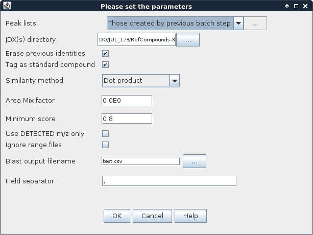

This method assigns identity to peaks according to their m/z profile and retention time values (at apex). The user provides a database of m/z profiles to compare to in JDX format (see below) stored in a given directory. This directory can contain several JDX files, thus constitutes a custom database to be searched. The user can also provide a retention time search window for each JDX spectrum to ease avoid false positive identification.
Database file has to be provided in JDX format (stands for JCAMP-DX - http://www.jcamp-dx.org/).
Such files can be edited manually using a text editor, since they are plain text.
This format was chosen among others because spectra can be downloaded directly from the NIST Chemistry WebBook - http://webbook.nist.gov/chemistry/
(ex. Nonanal mass spectrum page: http://webbook.nist.gov/cgi/cbook.cgi?ID=C124196&Mask=200#Mass-Spec,
related JDX file can be downloaded at: http://webbook.nist.gov/cgi/cbook.cgi?JCAMP=C124196&Index=0&Type=Mass).
It is also possible to export any spectrum displayed in MZmine to this format: See Export - JDX Export.
The following example shows the minimal structure of such a JDX file:
##TITLE=Nonanal ##JCAMP-DX=5.00 ##DATATYPE=MASS SPECTRUM ##DATACLASS=PEAK TABLE ##XUNITS=M/Z ##YUNITS=ARBITRARY UNITS ##NPOINTS=106 ##PEAKTABLE=(XY..XY) 38.0,2.8686373233795166 39.0,30.257293701171875 ... 284.0,0.20490266382694244 285.0,0.06830088794231415 ##END=
If the directory containing the nonanal-124-19-6-Mass.jdx file also contains a nonanal-124-19-6-Mass.jdx.rts file and the option "Ignore range files" is unchecked,
the identification algorithm will use the RT range as described in the RTS file. Otherwise, the search is done on the whole raw data file.
The following example shows the structure the '.rts' file must stick to:
MIN_RT=18.5 MAX_RT=21 RI=1079
Note: If the 'RI' property or the .rts file is not found, the search will still happen bypassing the use of this information.
